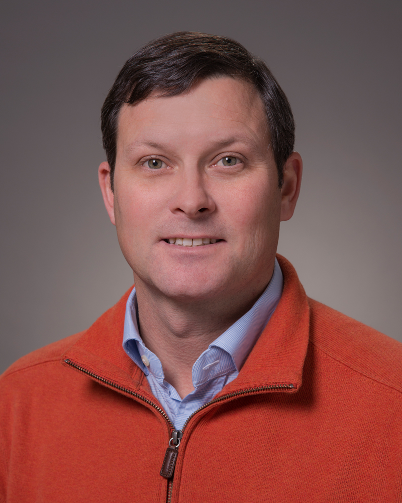

About Me
Hello! My name is A.G. Barlow. I am currently in my third week of computer coding. I accepted this challenge to attempt to build my skill set and make a career change. So far, I have found it extremely interesting and also extremely challenging. When I get down, I try to remember how far I have come in a short time.
I was born and raised in Rehoboth Beach, Delaware. Coming from a family of 6, I enjoyed playing sports, surfing, camping, meeting people and trying new things. I have lived in South Carolina for 16 years before moving to Florida, where I have been for the last 8 years. I am married and in my free time now, I enjoy cycling, running, watching Orlando City and putzing around the house.
Connect with Me